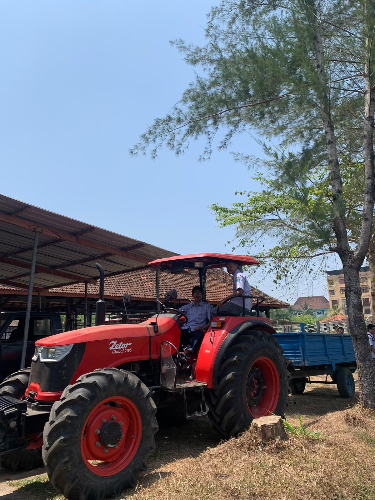

Politeknik Negeri Jember
Layanan Yang Tersedia Di TEFA

Program magang bagi mahasiswa dan pelajar yang ingin belajar langsung pengelolaan feedlot dan sapi perah.
Fasilitas kandang dan data peternakan untuk skripsi, tesis, atau riset institusi.
Kunjungan edukatif untuk sekolah dan kelompok, melihat proses pemeliharaan, pemerahan, dan pakan ternak.
Ada pertanyaan? peternakan@polije.ac.id